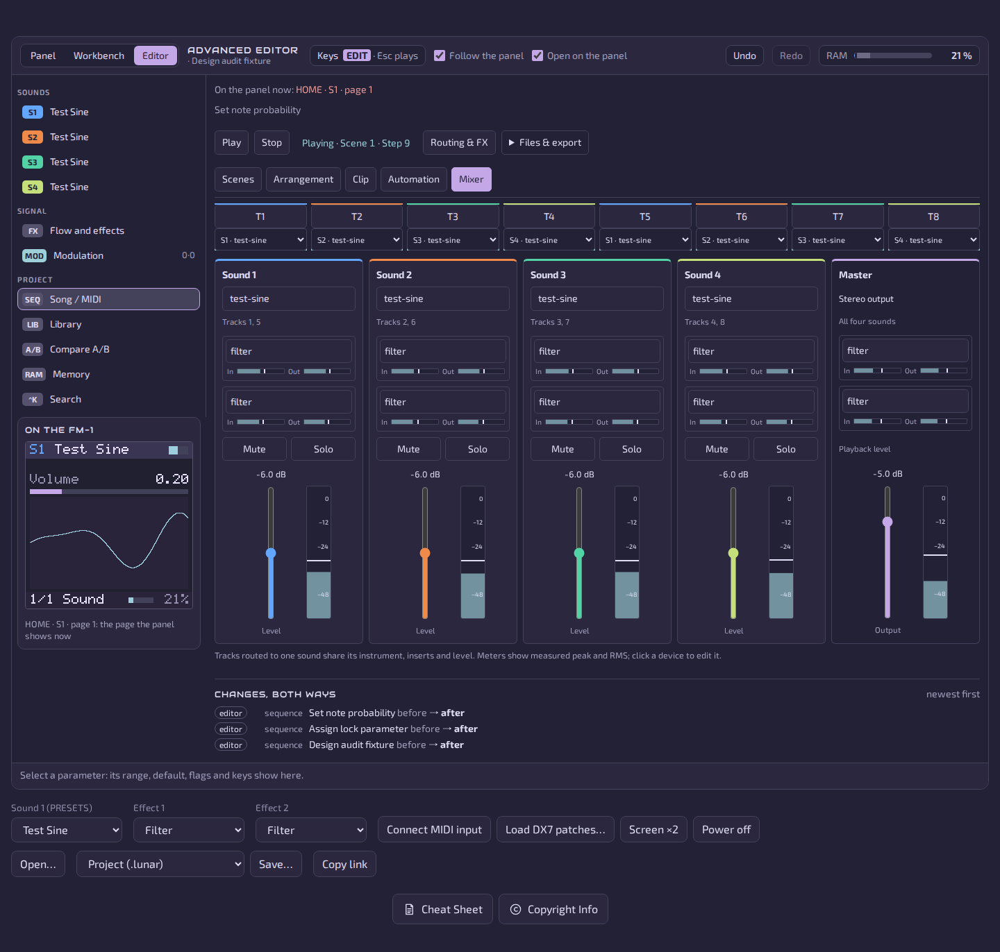
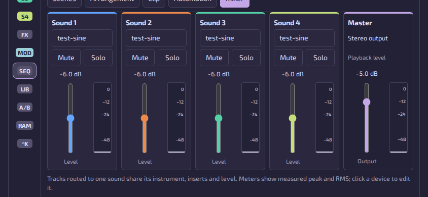
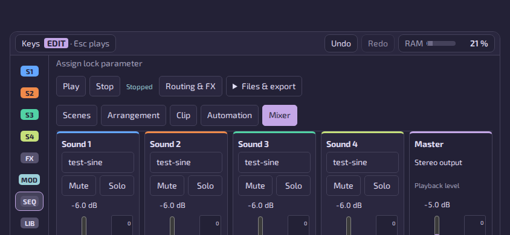

Clarity
6 → 8Shared sound channels and distinct scene edit/launch actions are explicit.
The redesigned mixer is ready for integration on the tested browser runtime. No remaining P0/P1 defect was observed. The density polish resolves the earlier Scenes, selected-note and inspector hierarchy findings. One first-screen landscape presentation refinement remains; it does not block tested functionality. Subsequent copy-only source review confirms the Arrangement singular-bar correction.
Eight MIDI tracks share four sound engines, insert chains and levels, plus Master.
Baseline → final, out of 10. Scores are editorial judgments.
Shared sound channels and distinct scene edit/launch actions are explicit.
Essential note values and primary device parameters precede secondary controls; scenes use compact rows.
Five aligned vertical strips, gain readouts, device stages and measured meters form a recognizable mixer.
Keyboard faders, persistent disclosures, named meters and a focused dismissible inspector work in the tested runtime.
The working landscape panels are usable; first-screen chrome still requires scrolling to faders and the roll.
Audiowide headings and the restrained space palette remain coherent; the sequencer is primarily utilitarian.


At 844×390, Mixer begins at y218 and Clip at y295. Full fader bottoms and the piano roll require page scrolling. The working mixer fits all five 140px faders after scrolling, and the refined Clip shows its essential note controls together with the roll starting at y232 in the working capture. This is a remaining presentation limitation, not an unreachable-control defect.
Next: Consider moving the working panel into view on explicit landscape tab activation, with a compact persistent transport/navigation row. Preserve the 44px fader hit area and avoid making labels smaller.
sim/web/www/editor/sequencer.js:642; sim/web/www/editor/sequencer.js:672; sim/web/www/editor/sequencer.css:101

Native results JSON · Portrait rotate capture · Markdown report
A subsequent one-line Arrangement bar-label correction was reviewed against the exact native snapshot; screenshots may show the earlier plural form. This is a design judgment and bounded runtime review, not an accessibility conformance certificate. Physical phone touch, screen-reader output, owner listening and FM-1 hardware were not tested. The six-pixel note resize affordance and small grid labels deserve a physical-touch pass; numeric controls provide an alternative. The preceding iteration passed sibling Chromium/Firefox/WebKit mock and native suites, including Firefox with a PulseAudio null sink. Fresh Chromium mock/native checks passed for this polish; sibling Firefox/WebKit reruns were still in progress when this report was saved. This independent report claims native Chromium execution only. Parent-reported build parity/storm and C tests were not rerun here. Nested grid scrolling is intentional; “no document overflow” does not mean every track/scene fits simultaneously.
Local Apple HIG skill and cached layout, color, sliders, text fields and accessibility; Anthropic frontend-design; Vercel web-design-guidelines and current guidelines; UI/UX Pro Max quick-reference/pro-rules; Bencium design-principles/audit-template. All were read. Guidance was adapted to this plain-JavaScript editor and its shared-engine architecture; no hooks or packages installed.
Root owns source, integration, commits, push, CI and required owner acceptance. Critic made no source changes or commits. Audited frontend is the saved P2 polish on base d4e0b64019faa668a6eeae685777fe5587881e2f; root owns incoming integration and backup status. Evidence hashes below. Report and screenshots are git-ignored scratch artifacts.
f163c1b5799bb6109718993600df4c3f7884ffca055a2e4df558cc8007e652198a3ae56a156ae23aa4c126ad3001ac5c3e78a0c83dd57c8dae21a9f8b8637fc6eac603871cb16dfc295d1f8c911f98f21f636c79bbc52c7202aeda3fad566e849bfe19fdfa91a174f4fe540761a57d325466dbfa3e55b5ccbd3283dd6d4b7774c4b58595b95cd6a55a0741b4c21caeac5d102ba179e1d0add3a5bfcdcf0b10f5Isolated Hera stage /home/claude/mvave-fm1/daw-critic-20261011/final/src; native harness audit.mjs; Playwright v1.63.0-noble container, 2 CPU/2 GiB, no exposed host ports. Previous iteration preserved under final-before-p2/. Initial stale-stage and old-selector attempts were corrected before the successful final run.